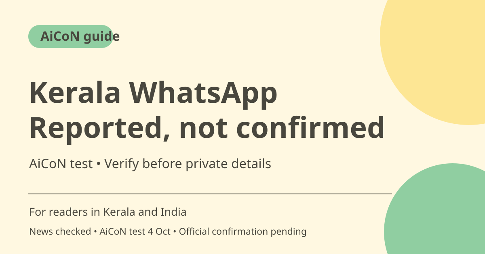

Kerala WhatsApp services: reported number and AiCoN test
BusinessLine reports Kerala government-service access through WhatsApp at 82814 99999. AiCoN's 4 October test recorded a welcome reply and six department options. An official government page confirming ownership of this number has not been found, so verify through the department before sharing private details or paying.

What the news report says
BusinessLine's September 30, 2026 report describes citizen-focused digital initiatives and names 8281499999 for the WhatsApp service. This is a newspaper report, not an official department access page. The number is included here with that attribution, not as an independently confirmed government contact.
What was tested by AiCoN
AiCoN's original October 4 post records that the reported number replied with a welcome to Keralam Government WhatsApp Services and offered Malayalam or English. The post also records an assistance number, 0471-155300, shown in the reply. That is a record of what the source returned on that date, not independent authentication of either number or a guarantee of current behaviour.
Six options recorded in the test
The original AiCoN test post lists CM's Public Grievance Redressal Portal, Kerala Water Authority, KSEB, Kerala Fibre Optic Network, Kerala Forest Department and Vigilance and Anti-Corruption Bureau. A menu entry is not proof that every underlying transaction completes through WhatsApp or that a department owns the number. Verify the actual service route before submitting documents.
What remains unconfirmed
No official government page naming the WhatsApp number was established in this article's research. A familiar name, logo or welcome message can be copied and cannot authenticate a contact by itself. The dated test and news report should remain visible wherever this guide is shared, so readers do not mistake an AiCoN explainer for a government publication.
Use low-risk information first
You can read a reported menu without treating it as authority to send identity documents, banking information or someone else's complaint details. Confirm contact ownership using a department website or a contact already trusted independently. Do not use the assistance number from the same unverified reply as the sole way to authenticate that reply.
Payments and urgent matters
No universal transaction fee, completion time or all-service availability was verified. Use established official department routes for urgent complaints, outages or payments. Never share OTPs, PINs or passwords, and do not pay a private person who claims a WhatsApp conversation is the only way to secure a benefit.
How to use it, step by step
- Read the linked BusinessLine report and note that it, rather than an official page, names 8281499999.
- Review the dated AiCoN test summary below; it records a reply on 4 October 2026, not live access today.
- Before sharing private information, independently confirm the number with the relevant department through its official website or previously trusted contact.
- If you explore the reported menu, begin with non-sensitive questions and choose the language offered without sending documents.
- Check the service destination and any requested data against a verified department route.
- Do not send OTPs, PINs, passwords or payments to an unverified contact. For urgent work, use established official channels.
- Keep acknowledgements only after using a verified service, and check completion with the department rather than assuming a menu reply finishes your request.
Cost, eligibility and limits
| Source status | Reported by BusinessLine; tested reply recorded by AiCoN on 4 October. Official number ownership remains unconfirmed. |
|---|---|
| Menu scope | Six options in the dated original test post. No proof of every transaction's live availability. |
| Price | No complete service-fee schedule verified. Check the individual verified service before paying. |
| Privacy | Verify before personal details. A chatbot greeting or logo is not authentication. |
Frequently asked questions
Is this a verified government WhatsApp number?
Not in this guide. BusinessLine names it and AiCoN recorded a reply, but official government confirmation remains pending.
What does the test prove?
It records the reply and menu AiCoN saw on 4 October, not official ownership or today's full service availability.
Should I send Aadhaar or make a payment immediately?
No. Verify the contact and service independently before private details or payments.
Sources and test record
The dated test is recorded in AiCoN's original WhatsApp post on 4 October 2026: a welcome reply, Malayalam/English and six department options. This is not a new test or official government ownership confirmation.
Report checked 6 October 2026. Original AiCoN test recorded 4 October 2026. Official confirmation pending.